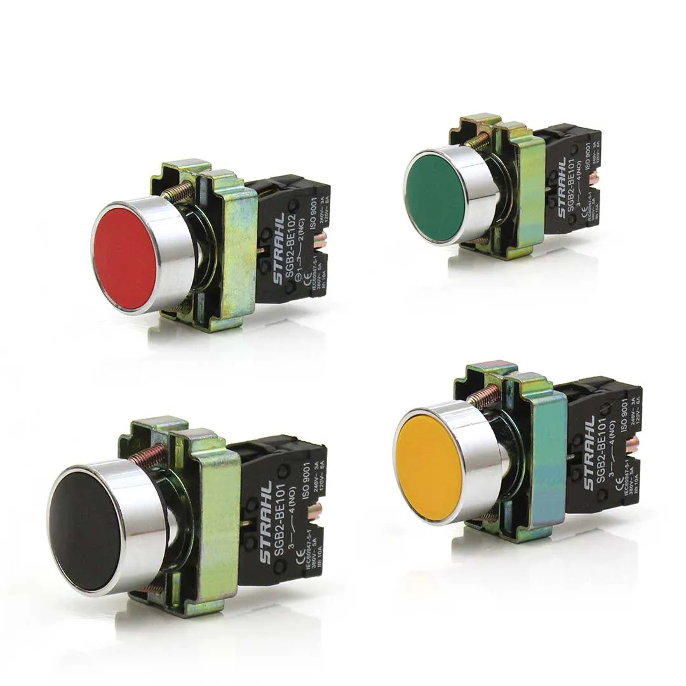
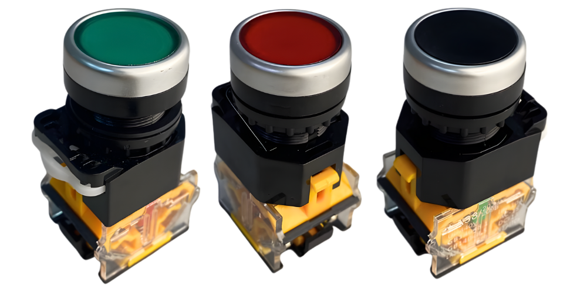
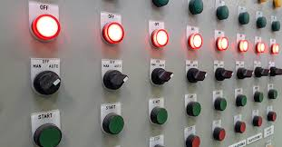

Botão de Pulso
Dispositivo de comando que envia sinais momentâneos em circuitos elétricos e sistemas de automação industrial.
Conceito e Aplicação
O botão pulso, também conhecido como botoeira, é um dispositivo de comando utilizado para enviar sinais momentâneos em circuitos elétricos e sistemas de automação industrial. Seu acionamento ocorre apenas enquanto pressionado, retornando automaticamente à posição original.
- Partida e parada de motores elétricos;
- Acionamento de sirenes e sinalizações;
- Controle de esteiras e máquinas industriais;
- Uso em painéis de comando e quadros elétricos.
Informações Complementares

Funcionamento
O botão pulso envia um sinal elétrico temporário quando pressionado, retornando automaticamente à posição de repouso.

Aplicações
Utilizado em comandos de partida e parada de motores, máquinas industriais, esteiras transportadoras e sistemas automatizados.

Vantagens
Oferece operação simples, rápida resposta ao comando e elevada confiabilidade para aplicações industriais.
Empresas
A Schmersal Brasil, a Steck e a Soprano destacam-se pela fabricação e comercialização de botoeiras utilizadas em painéis elétricos, máquinas industriais e sistemas de automação.
: Referência em segurança de máquinas e automação, com botoeiras robustas para ambientes industriais exigentes.
: Empresa brasileira com ampla linha de botoeiras e dispositivos de sinalização para painéis de comando.
: Fabricante nacional de componentes elétricos, oferecendo botoeiras e sinalizadores para uso industrial e comercial.